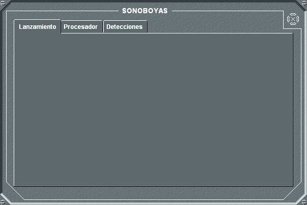
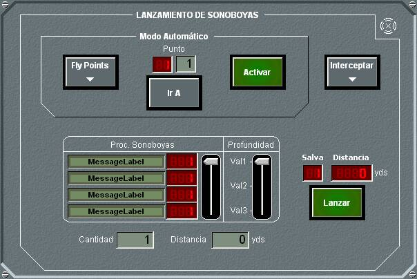
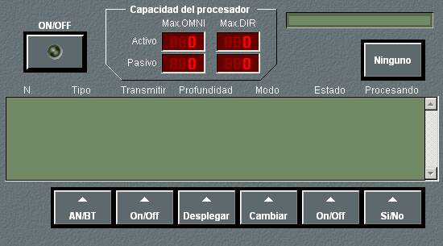
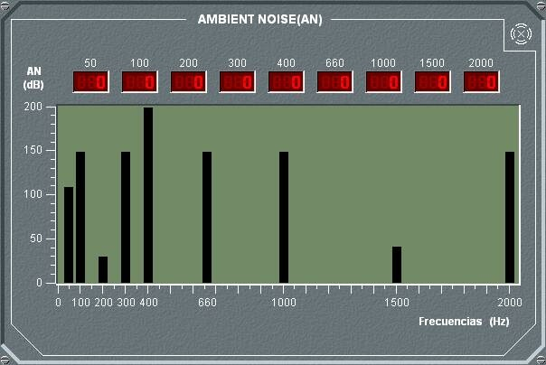
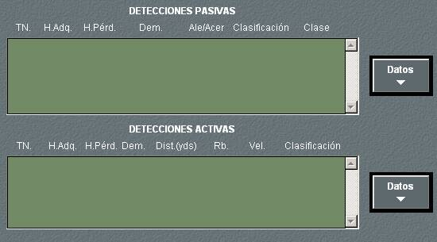

Sonoboyas

En el panel de detalle de las sonoboyas se puede elegir entre las opciones Lanzamiento, Procesador y Detecciones, pulsando en las solapas correspondientes.
Lanzamiento
En el panel de detalle de Lanzamientos se muestra, en la parte inferior, la lista de sonoboyas disponibles y la cantidad de cada una en el pañol.

Desde este panel pueden realizarse las siguientes acciones:
Mediante el botón Interceptar se abre directamente la ventana de Maniobra de Interceptación. Se trata de un acceso directo a esta maniobra para facilitar ir a los puntos en los que se quiere realizar lanzamiento Manual.
Desde este panel se seleccionan los puntos (latitud y longitud) en los que se desea lanzar sonoboyas. Estos puntos pueden seleccionarse posicionando el hook en ellos y pulsando el botón Hook. A cada punto se asocia el tipo de sonoboya y la profundidad de lanzamiento que estén seleccionados utilizando las barras de desplazamiento correspondientes. Al pulsar el botón Lanzar, queda registrada la secuencia de lanzamientos.
Mediante el botón Ir A el operador puede saltar directamente a un Flypoint, saltando los anteriores y continuando después la secuencia de lanzamiento automático por los puntos que se saltó.
El lanzamiento de sonoboyas solo puede realizarse si la altura de unidad se encuentra dentro del margen admitido por el lanzador (configurado en preparación).
Procesador

En el panel de detalle del Procesador se pueden realizar las siguientes acciones:

El diagrama de ruido ambiente muestra el nivel de ruido que existe en la zona donde se encuentra la sonoboya en decibelios por frecuencia entre 0 y 2000 Hercios, tanto de forma gráfica como alfanumérica.
Detecciones

El panel de detalle de detecciones muestra las listas de detecciones pasivas y activas, un máximo de 99 y 50 respectivamente, ordenadas de más a menos recientes, incluyendo los siguientes datos:
Nota: Todos los tiempos de retraso que se indican para la presentación de los datos que se describen a continuación son configurables en Galeón.ini.
Si el equipo está dañado, no se podrá realizar ninguna operación sobre él.
Las detecciones pasivas direccionales aparecen en la pantalla táctica como líneas de demora con origen en la posición de la sonoboya.
Las detecciones pasivas omnidireccionales se muestran en la pantalla táctica con un círculo parpadeante centrado en la sonoboya y cuyo radio es la distancia a la detección (*).
(*) Presentación de detecciones pasivas omnidireccionales no disponible en todas las versiones del simulador.